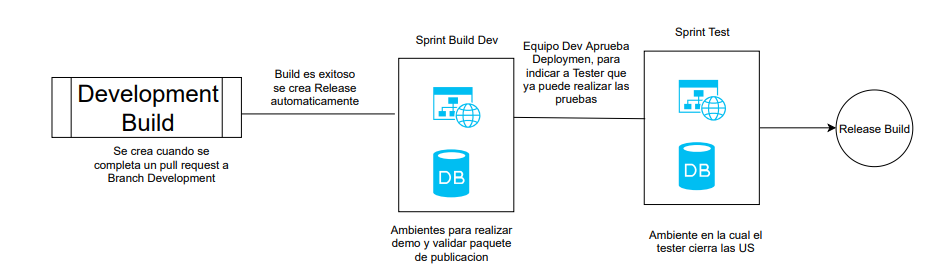
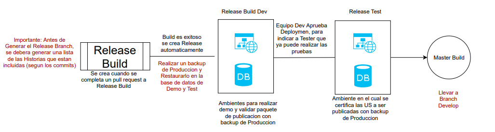
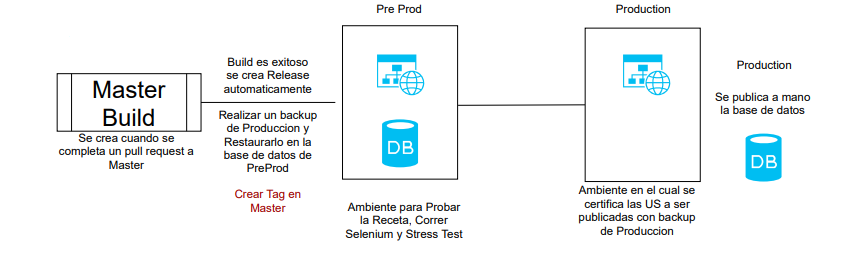
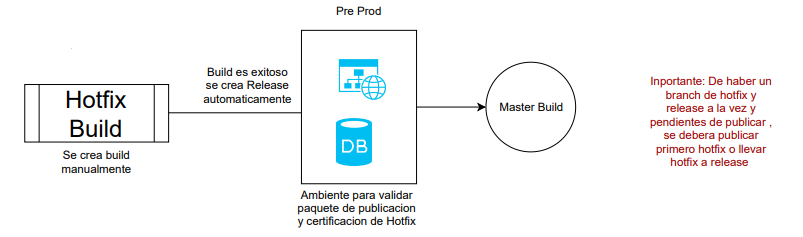

Gitflow Workflow
The Gitflow Workflow defines a strict branching model designed around the project release. This provides a robust framework for managing larger projects. Gitflow is ideally suited for projects that have a scheduled release cycle.
Getting Started
Gitflow is really just an abstract idea of a Git workflow. This means it dictates what kind of branches to set up and how to merge them together. We will touch on the purposes of the branches below. After installing git-flow you can use it in your project by executing git flow init. Git-flow is a wrapper around Git. The git flow init command is an extension of the default git init command and doesn't change anything in your repository other than creating branches for you.
How it works

Develop and Master Branches
Instead of a single master branch, this workflow uses two branches to record the history of the project. The master branch stores the official release history, and the develop branch serves as an integration branch for features. It's also convenient to tag all commits in the master branch with a version number.
The first step is to complement the default master with a develop branch. A simple way to do this is for one developer to create an empty develop branch locally and push it to the server:
> git branch develop
> git push -u origin develop
This branch will contain the complete history of the project, whereas master will contain an abridged version. Other developers should now clone the central repository and create a tracking branch for develop.
When using the git-flow extension library, executing git flow init on an existing repo will create the develop branch:
> $ git flow init
> Initialized empty Git repository in ~/project/.git/
> No branches exist yet. Base branches must be created now.
> Branch name for production releases: [master]
> Branch name for "next release" development: [develop]
> How to name your supporting branch prefixes?
> Feature branches? [feature/]
> Release branches? [release/]
> Hotfix branches? [hotfix/]
> Support branches? [support/]
> Version tag prefix? []
> $ git branch
> * develop
> master
Feature Branches
Each new feature should reside in its own branch, which can be pushed to the central repository for backup/collaboration. But, instead of branching off of master, feature branches use develop as their parent branch. When a feature is complete, it gets merged back into develop. Features should never interact directly with master.

Note that feature branches combined with the develop branch is, for all intents and purposes, the Feature Branch Workflow. But, the Gitflow Workflow doesn’t stop there.
Feature branches are generally created off to the latest develop branch.
Creating a feature branch
Without the git-flow extensions:
> git checkout develop
> git checkout -b feature_branch
When using the git-flow extension:
> git flow feature start feature_branch
Continue your work and use Git like you normally would.
Finishing a feature branch
When you’re done with the development work on the feature, the next step is to merge the feature_branch into develop.
Without the git-flow extensions:
> git checkout develop
> git merge feature_branch
Using the git-flow extensions:
> git flow feature finish feature_branch

Once develop has acquired enough features for a release (or a predetermined release date is approaching), you fork a release branch off of develop. Creating this branch starts the next release cycle, so no new features can be added after this point—only bug fixes, documentation generation, and other release-oriented tasks should go in this branch. Once it's ready to ship, the release branch gets merged into master and tagged with a version number. In addition, it should be merged back into develop, which may have progressed since the release was initiated.
Using a dedicated branch to prepare releases makes it possible for one team to polish the current release while another team continues working on features for the next release. It also creates well-defined phases of development (e.g., it's easy to say, “This week we're preparing for version 4.0,” and to actually see it in the structure of the repository).
Making release branches is another straightforward branching operation. Like feature branches, release branches are based on the develop branch. A new release branch can be created using the following methods.
Without the git-flow extensions:
> git checkout develop
> git checkout -b release/0.1.0
When using the git-flow extensions:
> $ git flow release start 0.1.0
> Switched to a new branch 'release/0.1.0'
Once the release is ready to ship, it will get merged it into master and develop, then the release branch will be deleted. It’s important to merge back into develop because critical updates may have been added to the release branch and they need to be accessible to new features. If your organization stresses code review, this would be an ideal place for a pull request.
To finish a release branch, use the following methods:
Without the git-flow extensions:
> git checkout master
> git merge release/0.1.0
Or with the git-flow extension:
> git flow release finish '0.1.0'
Hotfix Branches

Maintenance or “hotfix” branches are used to quickly patch production releases. Hotfix branches are a lot like release branches and feature branches except they're based on master instead of develop. This is the only branch that should fork directly off of master. As soon as the fix is complete, it should be merged into both master and develop (or the current release branch), and master should be tagged with an updated version number.
Having a dedicated line of development for bug fixes lets your team address issues without interrupting the rest of the workflow or waiting for the next release cycle. You can think of maintenance branches as ad hoc release branches that work directly with master. A hotfix branch can be created using the following methods:
Without the git-flow extensions:
> git checkout master
> git checkout -b hotfix_branch
When using the git-flow extensions:
> git flow hotfix start hotfix_branch
Similar to finishing a release branch, a hotfix branch gets merged into both master and develop.
> git checkout master
> git merge hotfix_branch
> git checkout develop
> git merge hotfix_branch
> git branch -D hotfix_branch
> $ git flow hotfix finish hotfix_branch
Example
A complete example demonstrating a Feature Branch Flow is as follows. Assuming we have a repo setup with a master branch.
> git checkout master
> git checkout -b develop
> git checkout -b feature_branch
>
> # work happens on feature branch
>
> git checkout develop
> git merge feature_branch
> git checkout master
> git merge develop
> git branch -d feature_branch
In addition to the feature and release flow, a hotfix example is as follows:
> git checkout master
> git checkout -b hotfix_branch
>
> # work is done commits are added to the hotfix_branch
>
> git checkout develop
> git merge hotfix_branch
> git checkout master
> git merge hotfix_branch
Source
https://www.atlassian.com/git/tutorials/comparing-workflows/gitflow-workflow
CI/CD Pipelines
Development

Release

Production

HotFix
